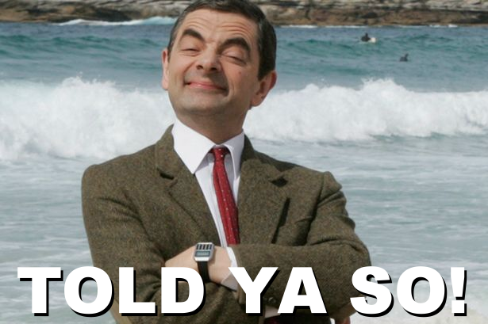

Who am I?
Well, let's have a look...

1. What's important to you in life?
Such a big question, but I would say, being true to oneself and as part of a community to embrace our differences as taonga/treasure and make it our strength.
2. If you could have any career, without worrying about money or other practical constraints, what would you do?
I would be an influencer/photograph/journalist, travelling around the world and sharing my learnings and discoveries with everyone on my personal website, made and maintained by myself.
3. When you’re reading news stories, what sort of story or behaviour tends to inspire you?
Success stories of amazing humans who succeeded in achieving their personal projects and share the wisdom and learnings that they encourntered through their learning curve/journey. Inspirational and hopeful stories.
4. What type of story or behaviour makes you angry?
Injustices, or stories or humans encouraging violence and negative and toxic behaviors. Also stories which relate more to the superficial rather than the essence of things, of life.
5. What do you want to change about the world or about yourself?
About the world, I wish the world was a safer place in terms of how one can be seen and accepted. A world where differences are valued, warmly welcome and celebrated. One where beauty is a concept so abstract to the human mind that everyone/everything is seen as beauty. This is my utopia but I would like to see a kinder world, with no discrimination, bullying and other toxicities.
About me, maybe change and be more assertive and confident towards my choices, and definitely stopping the overthinking about everything, every minute of the day. That would be great!
6. What are you most proud of?
My determination, ambition and willingness to achieve my personal goals and projects and my ability to recognise and share to whoever is interested my learnings, my mistakes and little wisdom I got from them.
My motto: "Where there is a will, there is . . .wait for it. . .ALWAYS a way"
7. When were you the happiest?
“Every day, think as you wake up, today I am fortunate to be alive, I have a precious human life, I am not going to waste it. I am going to use all my energies to develop myself, to expand my heart out to others; to achieve enlightenment for the benefit of all beings. I am going to have kind thoughts towards others, I am not going to get angry or think badly about others. I am going to benefit others as much as I can.”
― His Holiness The Dalai Lama -
